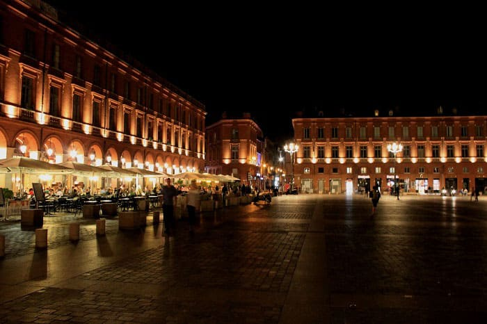
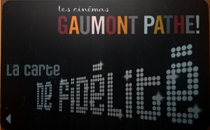
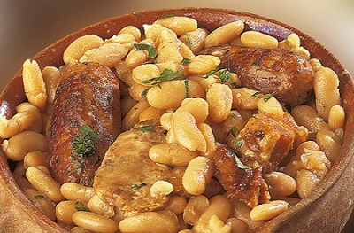

Francia nuestro vecino es un país donde se puede hacer multitud de actividades, si bien la parte norte es menos encantadora que la sur, ya que el mal tiempo predomina durante el año. Allí al igual que en España la comida es uno de los pilares de la sociedad, incluso más que en España, ya que allí está mucho más asociada a la vida familiar. Los restaurantes son muy demandados en contra de los bares o pubs que se frecuentan mucho menos. Estos últimos a partir de cierta edad no los frecuentan. Eso hablando de grandes núcleos de población porque la mayoría de los pueblos no tienen ni bar, ni discoteca. Si se quiere tomar algo allí lo toman en su casa o en la casa de amigos o vecinos pero no hay cultura de mezclarse con la gente en los pueblos de Francia.
Puede que en algunos pueblos grandes de más de 3.000 habitantes haya bares pero lo más seguro es que entre diario solo tengan la función restaurante.
Otro de los puntos coincidentes con España es el deporte. Francia es uno de los mejores países deportistamente hablando del mundo, con numerosos trofeos en todos los deportes y modalidades, tanto de invierno como de verano.
Líderes en el medallero y creadores de numerosos deportes, sede de montón de competiciones internacionales, las más importantes el Gran Slam de tenis, Roland Garros donde nuestro Nadal es el líder indiscutible y el Tour de Francia, la competición reina por excelencia en el ciclismo donde España ha logrado muchísimos trofeos, con Indurain y Contador a la cabeza. Allí al igual que en España el futbol es la competición por excelencia si bien el rugbi también es muy destacado. Cada ciudad y pueblo tiene un campo de futbol y un polideportivo, como en España.
Si bien nuestro país ha tenido unas muy buenas infraestructuras en las dos últimas decadas además de brillantes deportistas, de ahí su rendimiento donde destacan además en deportes de equipo como balonmano y voleibol, tanto hombres como mujeres.

En el ámbito de la noche son más como los países del norte, a las 7 de la tarde suelen cenar y a las 10 de la noche en un día normal ya están en la cama. Los telediarios suelen empezar 2 horas antes que aquí, el del medio día suele comenzar a la 1 del mediodía.
Por lo que los lugares de ambiente a las 8 de la tarde suelen abrir, aunque para los franceses a partir de las 7 ya es de noche.
Al igual que en España se bebe alcohol de noche, los precios suelen ser muy elevados en bebidas de alta graduación ya que están muy gravados de impuestos. Una botella que cuesta aquí 10 euros en el supermercado allí suele costar 20 o 25 euros y la botella en una discoteca o bar va desde los 60 euros a los 125 euros y hay gente que paga por ello. Luego tienen precios que pueden triplicar el precio de aquí, sin embargo los ingresos netos descontando sus impuestos no llegan al doble de aquí.
En realidad si bien un cubata cuesta de 7 euros para arriba hasta los 20 euros en discotecas selectas la gente francesa es mas de vinos y cervezas como aquí en España, siendo el vino en la cena la bebida estrella.
Francia tiene fama de buen vino como en España, si bien yo me quedo con nuestro país.
La calidad de la uva francesa es mejor que la española pero el clima no es el mejor, por ello sus uvas suelen ser más grandes y el vino no alcanza el sabor que tenemos aquí, sobre todo en la parte norte de la península.
Pero para lo que hay en Europa en general es uno de los mejores vinos.
Junto con España e Italia son uno de los países que más exporta vino del mundo.
Si bien España todavía tiene que ganar bastante terreno ya que nuestro vino no sale tanto de nuestras fronteras como el de ellos.
Luego salvo el tema de salir, que ellos se apalancan más en casa porque suelen tener una mentalidad más casera salvo ciudades cosmopolitas como Lyon y Paris donde la gente sale más, tenemos una manera de vivir
bastante parecida, y yo diría que Francia es como el nexo entre la mentalidad del norte y del sur, donde conviven las dos mentalidades.
Siendo más parecidos a nosotros en la parte sur que se consideraría muy hecho en Toulouse capital y allí es todo como en cualquier ciudad española con el beneficio de que la temperatura es más suave que aquí, para mi mejor tiempo.

Además otro punto fuerte de Francia es el arte y las ciencias, donde destacan en campos tan diversos como la ingeniería y el arte o la educación.
Es de destacar los cines de allí que cuenta con numerosas subvenciones estatales para los menores de 25 años y en algunos casos para parados.
Recuerdo entrar en el cine por 4,5 euros cuando aquí estaba la sesión en 7 a 10 euros. Los precios en adultos son similares a los de aquí.
Además los cines cuentan con numerosos descuentos de fidelidad como una entrada gratis cada 5 veces que vayas y además puedes ver las películas en versión original por el mismo precio.
Esto realmente es una buena medida, ya que las películas en versión original dicen mucho más de la historia que se cuenta que cuando se traduce, y fomenta el aprendizaje del inglés.
Pero si vas a un cine en Francia ten en cuenta que las películas empiezan a la media hora del inicio programado ya que cuentan con una enorme publicidad que hace que las entradas valgan tan baratas.
Toulouse fue la ciudad elegida por mí para ir a buscar trabajo y a mejorar mi nivel de francés, no solo por el buen ambiente que tiene la ciudad sino también por lazos familiares.
Pero independientemente de eso, y de la poca distancia con España, Toulouse goza de muy buen clima y es ciudad universitaria con una tasa de jóvenes muy alta.
Además los precios son más baratos que en el norte de Francia.
Además de tener un buen sistema de trasporte público para moverte tanto de día como de noche, ya que cuenta con autobuses búho por la ciudad, la red de trenes funciona muy bien y los aparcamientos en la ciudad no faltan.
Existen muchos alquileres y pisos para compartir, si bien una vez que ha empezado Septiembre y la temporada de clases de los estudiantes es más difícil conseguirse con un piso para compartir y los precios suben.
Toulouse es una ciudad que crece en población durante el curso pudiendo llegar a 1 millón y medio de habitantes de residentes ya que cuenta con numerosos estudiantes y turismo adicional.
En los pueblos de alrededor suelen dominar las casas y chalets y grandes urbanizaciones.
A la mayoría de los franceses les gusta la tranquilidad y alejarse de los ruidos y el tráfico.

La cocina francesa es bastante buena, como la española teniendo variedad de platos y bastantes de la dieta mediterránea.
El plato más popular de Toulouse es el Cassoulet que es parecido a la fabada asturiana de aquí solo que en vez de morcilla o sebo se le suele echar la salchicha típica de allí.
Allí se suele hacer los fines de semana y también se come bastante pato que aquí no se come apenas ya que lo asociamos más a animal de compañía o animal de los estanques o parques de España.
La carne de pato es bastante más fuerte que la de pollo, algo entre conejo y pollo.
Aquí comemos bastante conejo y allí rara vez lo vi, si bien se caza tanto como en España.
La leche es bastante buena y los quesos también. De hecho allí representan un plato más en la comida que suele corresponder con el primero, en el que se comen quesos y pates.
El pate de allí suele ser de pato o de cerdo, ya que el famoso pate de oca es demasiado caro para comerlo diariamente. Una lata de 100 gramos puede alcanzar los 40 euros. Las verduras son bastante buenas y las frutas también ya que llueve bastante y también hace sol, siendo muy indicado el clima para una gran variedad de especies.
Los tomates por ejemplo son bastante buenos y tienen muchísimas variedades.
© 2016 - All Rights Reserved - Diseñada por Sergio López Martínez
![[Valid RSS]](https://www.feedvalidator.org/images/valid-rss-rogers.png "Validate my RSS feed")